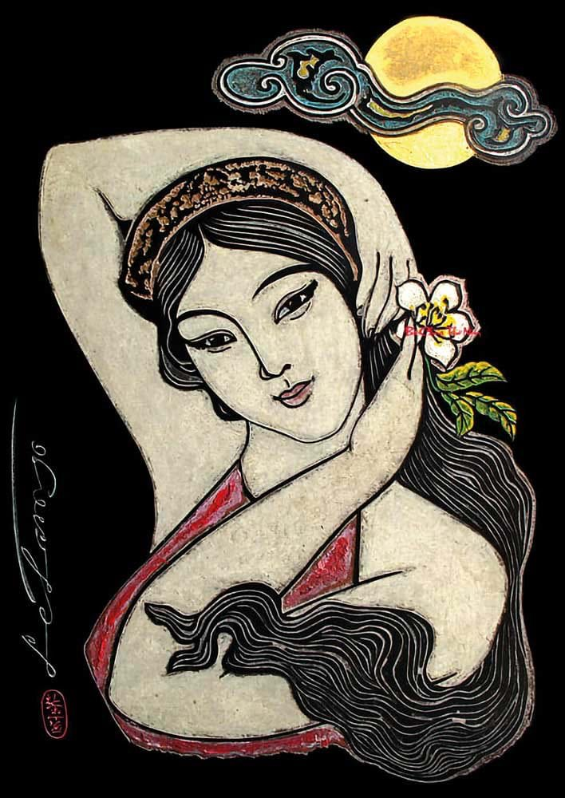
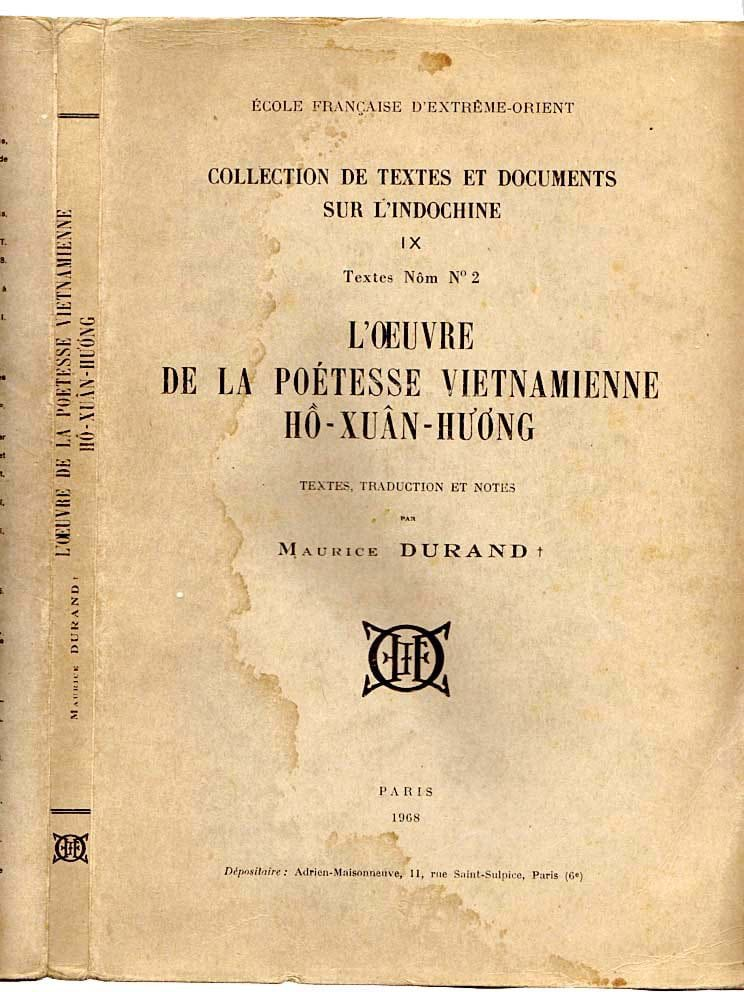

Bible · Comparative reading
Kneaded, Beaten, and Unbowed
Women’s agency in the Song of Songs and Hồ Xuân Hương’s “Bánh trôi nước”
Albert Le Thanh Nhan
The Bible as Literature · Prof. Koss · 30 October 2026
身㛪辰𤽸分㛪𧷺
𠤩浽𠀧沉買渃𡽫
硍湼默油𢬣几揑
𦓡㛪刎𡨹𬌓𢚸𣘈
The question
Two women say “I” inside systems that dispose of their bodies
Song of Songs
A young woman answers to brothers, watchmen, and a king’s name.
“Bánh trôi nước”
A woman speaking as a rice cake answers to fate, water, and an unnamed kẻ nặn, “the one who kneads.”
Agency here means less the power to escape constraint than the capacity to speak of oneself, to want, to act, and to claim possession of oneself in words.
Thesis
One speech act, two directions
Both poems locate agency in a final speech act of self-possession that answers the hands that hold the woman. The two speech acts point in opposite directions.
The Song lets its woman desire; the quatrain lets its woman remain.
The two texts
A song collection and a quatrain
| Song of Songs | “Bánh trôi nước” | |
|---|---|---|
| Language and script | Hebrew; quoted here in the King James Version (1611) | Vietnamese, written in chữ Nôm, a script built from Chinese characters and their components |
| Form | Love lyrics in 8 chapters, 117 verses | A Tang-style quatrain (thất ngôn tứ tuyệt): 4 lines of 7 syllables, rhyming tròn / non / son |
| Who speaks | A young woman, her lover, the daughters of Jerusalem, her brothers | A woman, through the voice of a floating rice cake |
| Authorship | Uncertain; the title links it to Solomon (1.1) | Attributed to Hồ Xuân Hương; survives in late copies |
| The hands | Brothers, watchmen, a king’s name | Fate, water, the kneader |
Part I · The poet
Hồ Xuân Hương, “the Queen of Nôm poetry”
- Usually dated 1772–1822, though the facts of her life are hard to verify.
- Family from Quỳnh Đôi, Nghệ An; raised in Thăng Long (Hà Nội), near West Lake.
- Married twice, by most accounts as a concubine (vợ lẽ).
- Xuân Diệu called her Bà chúa thơ Nôm, “the Queen of Nôm poetry.”
- In 2022, after a UNESCO resolution, Việt Nam marked 250 years since her birth and 200 since her death.

Part I · The poems in print
From hand copies to French and English
- 19th centuryHer Nôm poems circulate in hand copies.
- 1909 · 1914First woodblock printings, including Quốc âm thi tuyển (1914).
- 1968 · FrenchMaurice Durand (1914–1966): Nôm texts, translation and notes, published by the École française d’Extrême-Orient after his death.
- 2000 · EnglishJohn Balaban, Spring Essence: by his account, the first typographic printing of Nôm.
Scholars attribute anywhere from 25 to 148 poems to her, so this presentation speaks of “the speaker,” not the poet’s life.

Part I · The cake
Bánh trôi nước: the “cake that floats in water”
- A ball of glutinous rice dough around a cube of brown sugar.
- Dropped into boiling water, it sinks at first; it is done when it floats.
- Eaten on Cold Food Day (Tết Hàn thực), the 3rd day of the 3rd lunar month.
The kitchen supplies every image in the poem: white and round, floating and sinking, kneaded by hand, with a dark sweet heart inside.
Part I · The whole poem
餅㵢 Bánh trôi nước · The Floating Cake
Nôm text and Vietnamese follow the Vietnamese Nôm Preservation Foundation. English translation by the presenter.
Part I · Reading the quatrain
Words that carry the argument
Variant The school text reads “Thân em vừa trắng lại vừa tròn, / Bảy nổi ba chìm với nước non”, placing both whiteness and roundness in the body. The Nôm graph 買 can stand for more than one word: mấy (“so many”) or với (“with”).
Part II · Speaking the body
“Black, but comely” and “white and round”
The Song She names who caused her darkness: the sun and her brothers. The vineyard is also her own body.
The quatrain What makes her float and sink is impersonal: fate, water, nước non (the homeland).
Part III · Desire in motion
The Song gives its woman a chain of active verbs
The Song’s woman acts
Xuân Hương’s speaker is acted upon, until the last line
She leads him to her mother’s house, not the “father’s house,” the usual biblical term for a household, and so places her desire inside a female line of descent.
Part III · The cost of motion
The second night search
- 5.7The watchmen who merely “found” her in chapter 3 now beat her, wound her, and strip her veil.
- 5.8She charges the daughters of Jerusalem to tell her lover “that I am sick of love.”
- 5.10–16She gives the Song’s one extended description of a man’s body, seen by a woman.
The beating interrupts her search, but it does not end her speech. Xuân Hương’s speaker never reaches the street, and what she keeps is inside her, where no watchman can take it.
Part IV · Walls and vineyards
“I am a wall”: answering the brothers
Brothers Third person: their sister is property to prepare for a marriage negotiation. A wall will be decorated; a door will be boarded shut.
She First person: “I am a wall, and my breasts like towers” (8.10). She takes their metaphor and turns it into her own fortification.
mine own vineyard have I not kept
My vineyard, which is mine, is before me
Part IV · Concession and reply
“Mà em vẫn giữ”: yet I still keep
Line 3 concedes everything external, as a Vietnamese woman of her time was expected to. The speaker admits the kneader’s power, which sets the stage for her reply: her noble character does not waver.
Her agency costs her a split between body and heart that the Song’s woman does not have to accept.
Part V · The seal and the vermilion heart
One woman asks to be the seal; the other keeps the vermilion
The seal A personal mark of identity, worn on a cord or on the hand. She asks to be pressed onto her lover’s heart, to mark him as hers. A woman prepared for a marriage negotiation ends by saying that love has no price.
The vermilion Tấm lòng son (𬌓𢚸𣘈) joins the heart to son, the red of the paste in which East Asian seals are stamped.
The water Many waters cannot quench love; the cake floats seven times and sinks three, and her heart survives.
Synthesis
Two kinds of agency grown under control
| The Song’s woman | Xuân Hương’s speaker | |
|---|---|---|
| The hands | Brothers, watchmen, a king’s name | Fate, water, the kneader |
| Mode | Erotic, outward | Ethical, inward |
| Signature acts | Seeks, seizes, leads, answers, marks him as hers | Floats and sinks, is kneaded, keeps |
| The cost | The city punishes her mobility | The unity of body and heart |
| Last word | “My vineyard, which is mine, is before me” | “Mà em vẫn giữ tấm lòng son” |
Neither woman escapes the hands that claim her: brothers, watchmen, kneaders, fate, and the society that sanctions them. Both, however, have the last word.
Conclusion
The Song lets its woman desire; the quatrain lets its woman remain
For discussion
- Is keeping one’s heart a form of agency, or a way of consenting to the hands?
- Does the Song’s freedom depend on its genre, a lyric with no plot to resolve?
- The legend of Mỵ Châu blames a young woman’s misplaced heart for the fall of the nation. How does a heart kept “through so many waters and mountains” answer it?
Works cited
Balaban, John. “Hồ Xuân Hương Introduction.” Vietnamese Nôm Preservation Foundation, nomfoundation.org/nom-project/Ho-Xuan-Huong.
Hồ Xuân Hương. “Bánh trôi.” Poems of Hồ Xuân Hương, Vietnamese Nôm Preservation Foundation, nomfoundation.org/nom-project/Ho-Xuan-Huong/Ho-Xuan-Huong-of-poems/8-The%20Floating%20Cake.
---. L’Œuvre de la poétesse vietnamienne Hồ-Xuân-Hương: textes, traduction et notes. Translated by Maurice Durand, École française d’Extrême-Orient, 1968. Collection de textes et documents sur l’Indochine 9, Textes Nôm 2.
---. Spring Essence: The Poetry of Hồ Xuân Hương. Translated by John Balaban, Copper Canyon Press, 2000.
“Hồ Xuân Hương.” Wikipedia, en.wikipedia.org/wiki/Hồ_Xuân_Hương.
King James Bible. 1611. eBible.org, ebible.org/kjv.
“President Phúc Pays Tribute to Poet Hồ Xuân Hương.” Việt Nam News, 4 Dec. 2022, vietnamnews.vn/life-style/1401322.
“The Floating Rice Dumplings of Cold Food Day.” Việt Nam News, 7 Mar. 2017, vietnamnews.vn/life-style/372327.
Images and type
Hồ Xuân Hương, woodcut-style painting (slide 5), supplied by the presenter; artist not identified.
Cover of Durand’s 1968 edition (slide 6), photograph supplied by the presenter.
Nôm characters set in Nom Na Tong, © The Vietnamese Nôm Preservation Foundation, Nom Na Group, MIT License. The diagram on slide 7 was drawn for this presentation.